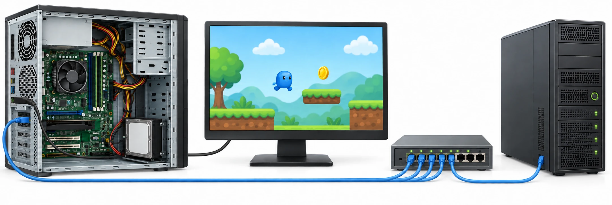

OBSERVER · EXPÉRIMENTER · EXPLIQUER
Tester le jeu et comprendre les ordinateurs du collège
On améliore le jeu de la séance précédente. On distingue les composants du PC, son fonctionnement et le réseau qui permet de partager le fichier au collège.

Q4 · Vérifier ton propre Pong après correction
Reprends ton relevé T1 à T8 de B01. Dans ton projet Scratch, refais T5 (un point par sortie), T7 (nouvelle partie) et T8 (enregistrer puis rouvrir). Pour chaque test, note attendu, obtenu et réussite. Explique une amélioration et pourquoi le banc web ne suffit pas à valider ton code.
Retrouver les tests et le guide des blocs de B01
Utilise Scratch installé sur le poste, ou la version en ligne indiquée par le professeur. Aucun compte personnel nécessaire pour travailler sans partage.
Des observations pour expliquer
- Q1 à Q4 : suis ta fiche. Conserve les réglages, les relevés et les explications sur papier.
Appuie ton explication sur une valeur, un changement observé ou une comparaison. Distingue ce que montre le modèle et ce qui reste à vérifier.